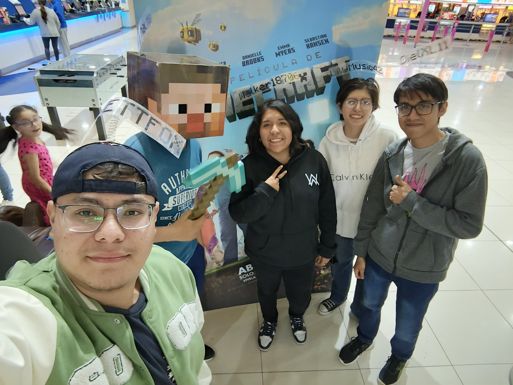
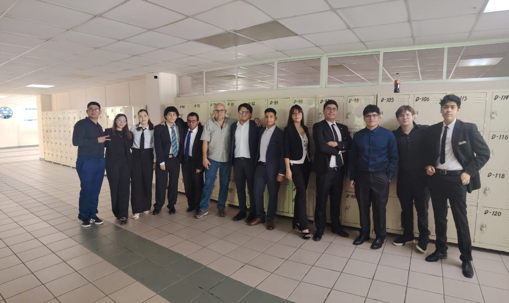

A lo largo de mi vida he tenido la oportunidad de conocer a muchas personas, tanto importantes como gente solo esta de paso y ya. Pero las pocas personas que he podido considerar tanto como amigos o como familia han sido pocos.
Algunas de las personas que considero como parte de mi familia son mis amigos de la prepa, mi grupito se conforma por 4 personas, Diego, Angel (Josu), Esme y Nadia. Con ellos he pasado buenos momentos y tengo buenos recuerdos siempre que salimos a algun lugar o simplemnete si nos juntamos a platicar y ponernos al corriente, ya que por la distancia luego no los puedo ver mucho, pero son muy importantes para mi.

Hoy en día también he podido conocer a mas gente en la universidad, ya que me toco un buen grupo para poder pasar esta estapa de mi vida. Algunas de las personas con las que más he podido hablar a sido Estefania, Cris, Marlene, Oscar, Diego, Marcos, Uri, Ivan, entre otras muchas personas del grupo, ya que nos hemos podido llevar de una buena manera durante este tiempo que llevamos siendo compañeros de clase.
